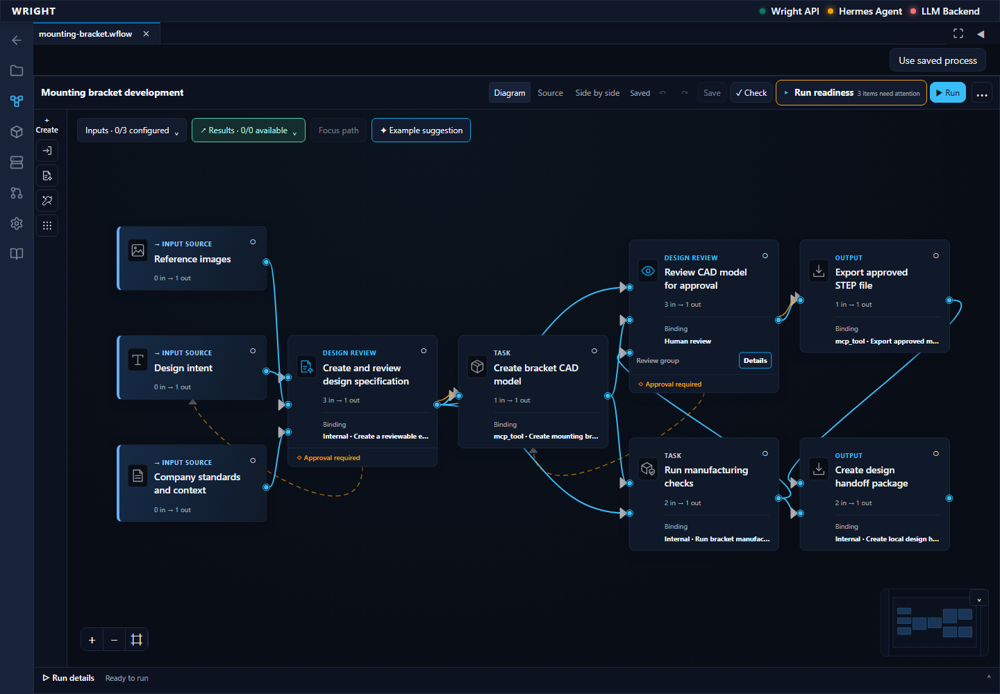
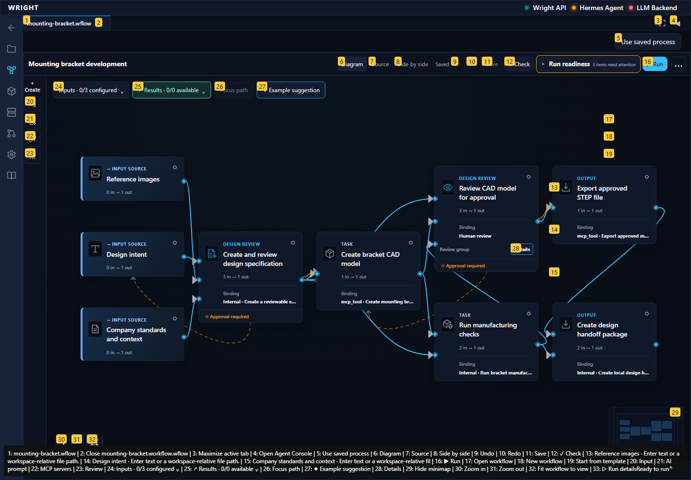
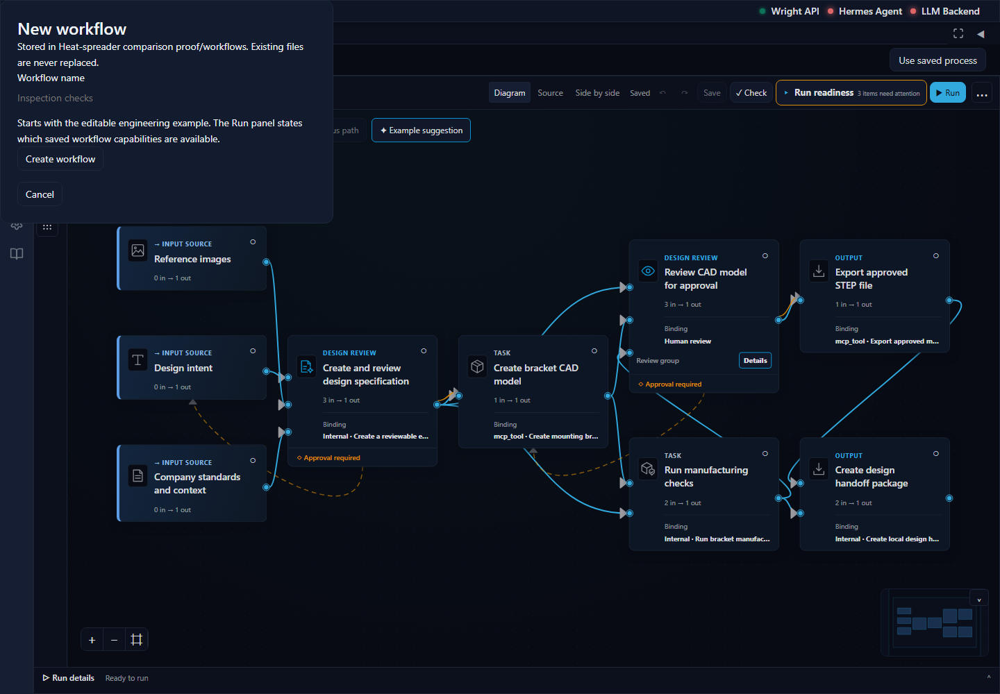
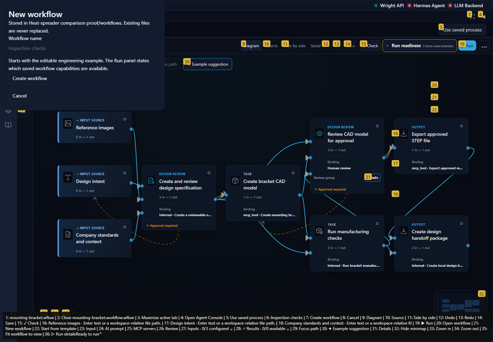

A fresh empty verification workflow, preserved editor authoring and no execution; stop at the first confusing or failing state.
Status: blocked
The existing editor opens in its workspace tab.
Expected: Existing editor and workflow file menu.
Actual: Editor and workflow file menu visible.
raw 
annotated 
First confusing or failing state retained before creating a workflow.
Expected: Creation instructions match the actual blank workflow.
Actual: expect(locator).not.toContainText(expected) failed Locator: getByRole('dialog') Expected substring: not "Starts with the editable engineering example" Received string: "New workflowStored in Heat-spreader comparison proof/workflows. Existing files are never replaced.Workflow nameStarts with the editable engineering example. The Run panel states which saved workflow capabilities are available.Create workflowCancel" Timeout: 5000ms Call log: - Expect "to.have.text" with timeout 5000ms - waiting for getByRole('dialog') 14 × locator resolved to <dialog open="" aria-labelledby="_r_0_-title">…</dialog> - unexpected value "New workflowStored in Heat-spreader comparison proof/workflows. Existing files are never replaced.Workflow nameStarts with the editable engineering example. The Run panel states which saved workflow capabilities are available.Create workflowCancel"
raw 
annotated 